How to Train Your Model
Creating the Model
After we selected the useful columns and cleaned up the NAN values in the original data,
we did one-hot encoding to all the factors we used to predict a justice's ruling behavior:
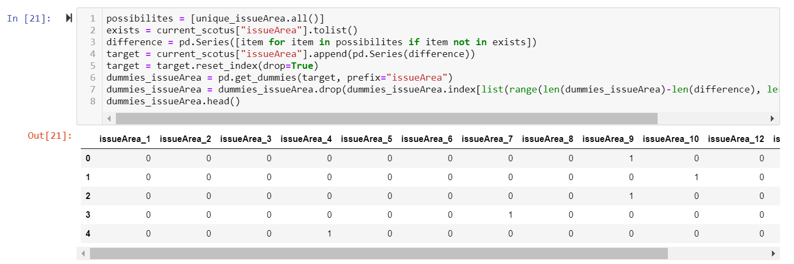
In our ML model, first we did data pre-processing, focusing on the direction of the individual justice's ruling:
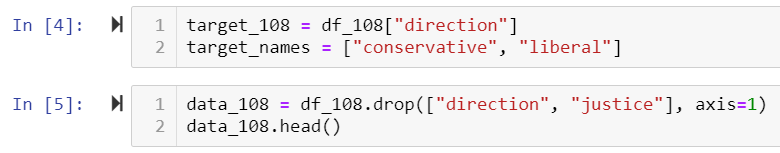
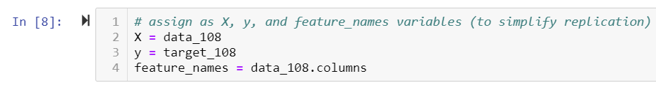
We chose machine learning models that can work with our data set, and tested the accuracy to see which would work best:
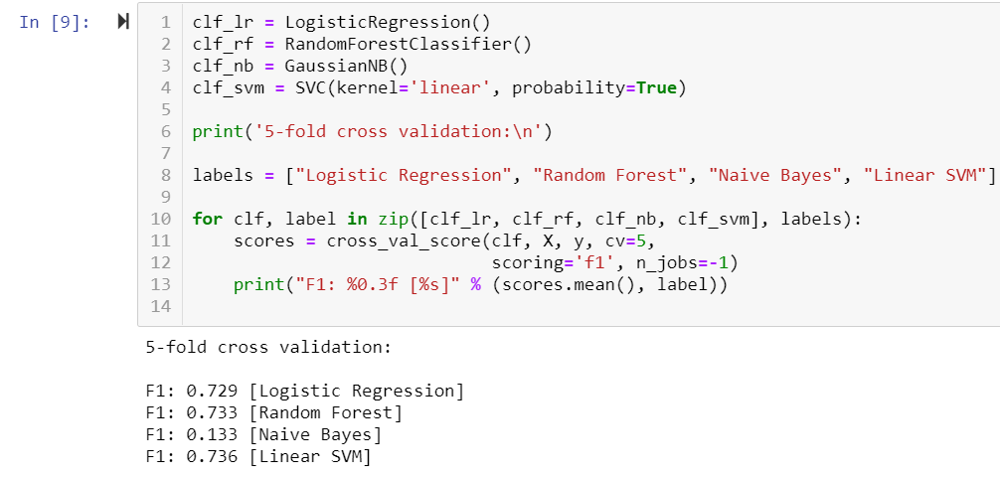
We then did further testing with hard and soft voting classifiers:
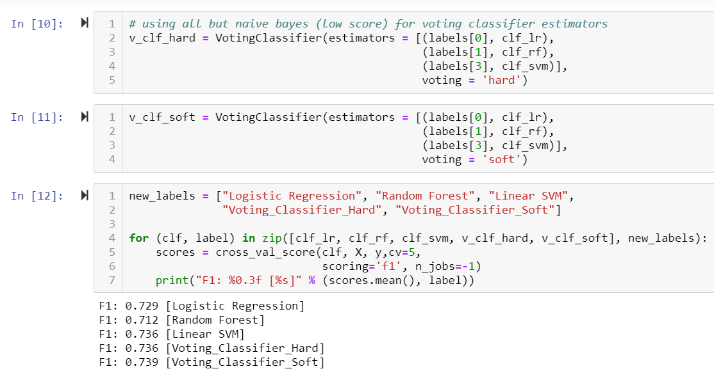
Since no one model was the best predictor for all the justices, we decided to test the linear SVM on all of them.
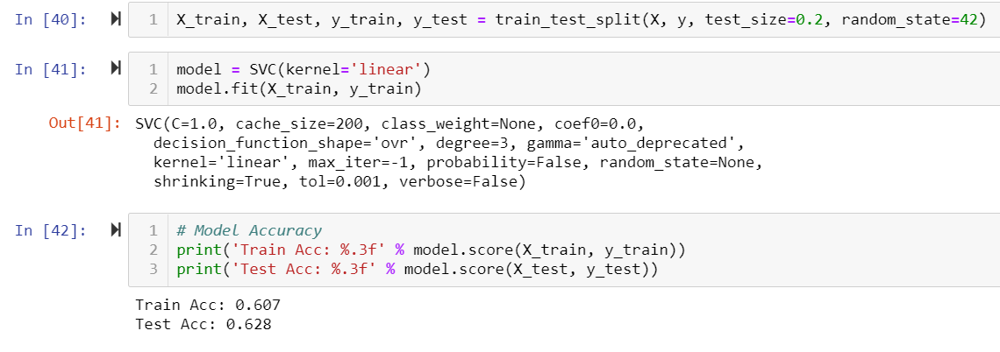
This is how our model tested against the data.
We also used a confusion matrix to compare the number of true and false negatives and positives to the data.
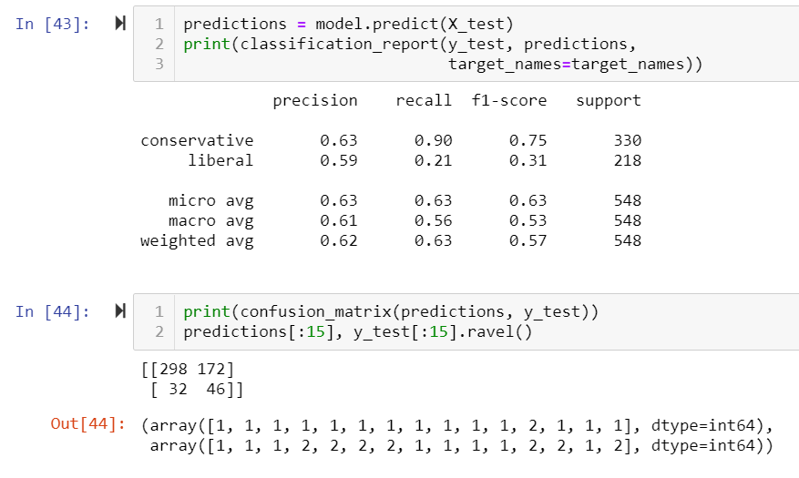
Lastly, we saved the model:
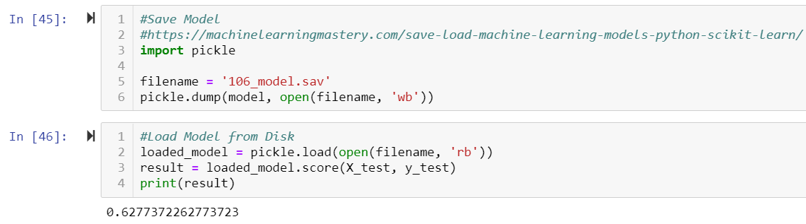
Using the Model
We prepared the case data (5 cases from the 2018 session and 12 Historical Landmark cases) using Pandas and one-hot encoding
to convert the categorical
values for later feeding into the model:
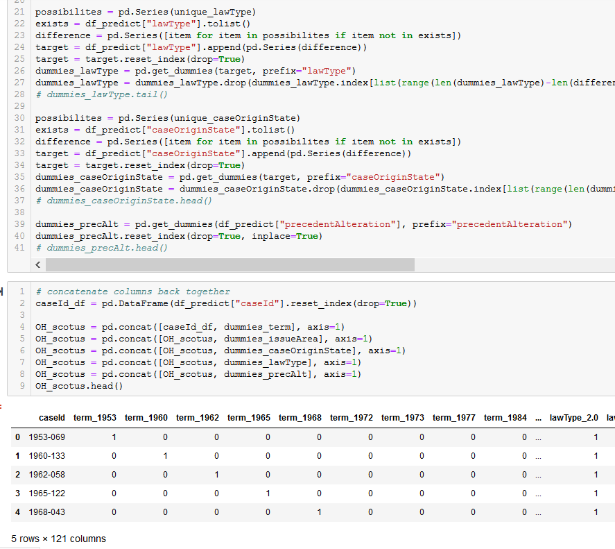
We then used nested for loops and pre-defined functions to iterate through each case and justice's model in order
to predict respective outcomes:
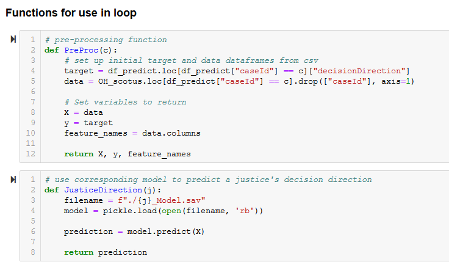
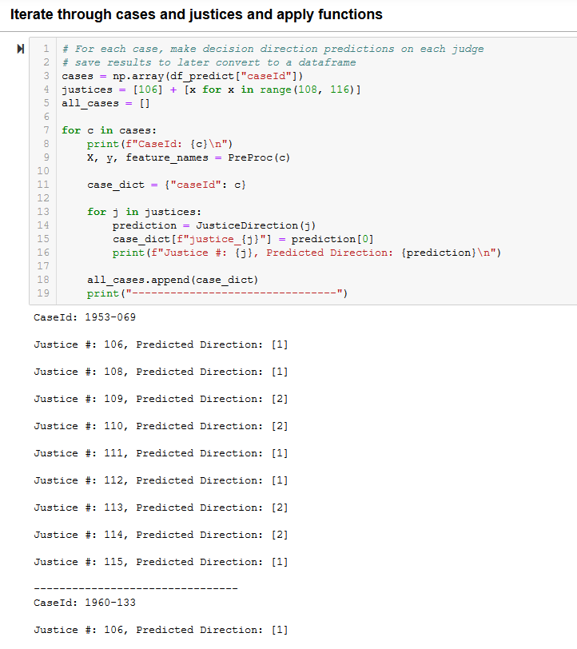
The predictive model results were then converted to a dataframe to save to CSV for use in Tableau visualizations:
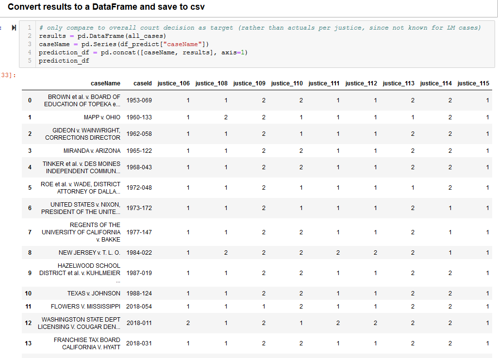
Interestingly, we were able to accurately predict 80% of the cases from the 2018 session, whereas the predicted outcomes for historical cases were not as accurate (25%).
This makes sense given that we were making predictions based on different justices than those that were on the court at the time; in addition,
conservative and liberal judgement ideologies have experienced significant shifts between when these cases were heard and today.